Roj guide
Everything Roj does, with screenshots. Roj (ڕۆژ) means both sun and day in Kurdish; read why.
Getting started
- Install Roj from extensions.gnome.org, the Ubuntu PPA, the .deb packages or the tarball. See Install.
- On Wayland, log out and back in once, so GNOME Shell loads it.
- The Kurdish date appears next to the clock. Click it to open the calendar.
- Choose your language: click Settings in the popup, then General, Languages.
The popup
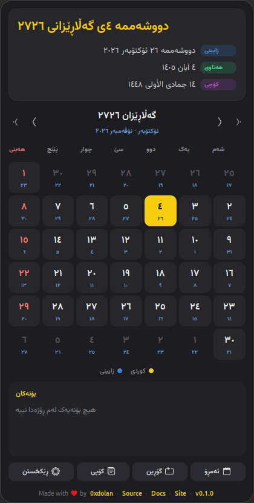
From top to bottom:
- Header: the selected day in Kurdish, large, and under it the same day in the Gregorian, Persian and Islamic calendars, each with a coloured label.
- Month bar: the Kurdish month and year, and the Gregorian (and, if shown, Persian and Islamic) months it spans. The inner arrows change the month, the outer arrows the year. Click the month name to return to today. You can also scroll over the days.
- Weekdays: the week starts on Saturday by default, and the weekend is red.
- Day cards: see Day cards. Today is yellow, the selected day has a yellow outline, and a dot means the day has events.
- Legend: which colour belongs to which calendar.
- Events: the selected day's events. Holidays carry a red badge.
- Buttons: Today, Convert (opens the converter), Copy (copies the selected day with the Copy pattern) and Settings.
- Credits line: links to the author, the source, these docs and the website. You can hide it.
In Sorani, Persian and Arabic the popup is laid out right to left. Its size never changes when you pick another day.
The top bar
The top bar shows the Kurdish date with your pattern. When today has events, it also shows a marker; choose it under Appearance, Top bar, Today's events:
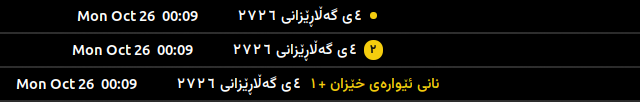
Day cards
The large number in each card is always the Kurdish day. Up to three small numbers, all the same size, can sit beside it:
| Calendar | Colour | Default |
|---|---|---|
| Gregorian | ● blue | On |
| Persian (Jalali) | ● green | Off |
| Islamic (Hijri) | ● purple | Off |
Turn each on or off under Appearance, Day cards: any one, two or all three, in a row under the day or in the corners. Each small number uses the digits of the language its calendar is written in.
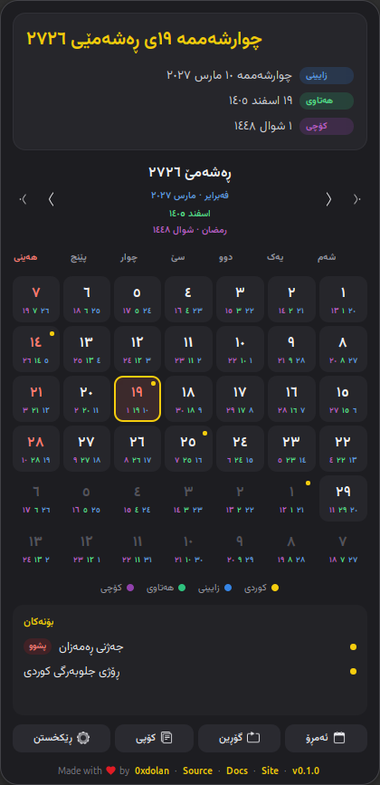
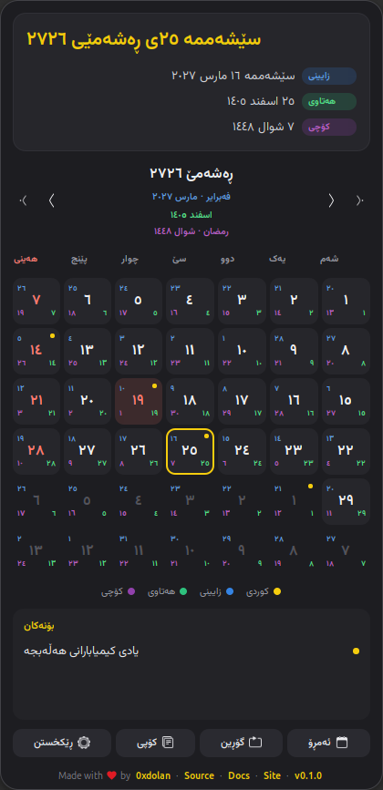
Languages and digits
Roj speaks Sorani, Kurmanji, English, Persian and Arabic. Under General, Languages you choose three things:
- Main date language: the language of the Kurdish date.
- Other calendars: the same language as the main date, the interface language, or each in its own language: Gregorian in English, Persian in Persian, Islamic in Arabic.
- Interface language: menus, labels and the settings window. By default it follows the main date language.
Friday 26 June 2026 in each language:
| Language | Kurdish date | Gregorian date |
|---|---|---|
| Sorani | هەینی ٥ی پووشپەڕی ٢٧٢٦ | ٢٦ یونیۆ ٢٠٢٦ |
| Kurmanji | În 05 Tîrmeh 2726 | 26 June 2026 |
| English | Friday 05 Pûşper 2726 | 26 June 2026 |
| Persian | آدینه ۵ پووشپەڕ ۲۷۲۶ | ۲۶ ژوئن ۲۰۲۶ |
| Arabic | الجمعة ٥ پووشپەڕ ٢٧٢٦ | ٢٦ يونيو ٢٠٢٦ |
With each in its own language, a Sorani user sees ٥ی پووشپەڕی ٢٧٢٦ together with 26 June 2026, ۵ تیر ۱۴۰۵ and ١٠ محرم ١٤٤٨.
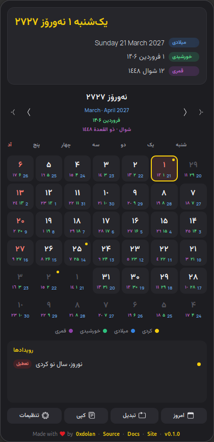
Digits
Each language uses its own digits by default: Persian ۰۱۲۳, Sorani and Arabic ٠١٢٣, English and Kurmanji 0123. Change them per language under General, Digits.
Sorani ezafe
Sorani writes a linking ی after the day when a month name follows (٥ی پووشپەڕ) and after the month when a year follows (پووشپەڕی ٢٧٢٦). Under General, Sorani ezafe you switch it on or off for each calendar. By default it is on for the Kurdish date only. It applies only to dates written in Sorani.
How dates are converted
The Kurdish calendar follows the sun. Each year begins at Newroz, the March equinox, usually on 21 March. Its months have the same lengths as the Persian (Jalali) calendar:
- months 1 to 6 have 31 days,
- months 7 to 11 have 30 days,
- month 12 has 29 days, or 30 in a leap year.
Only the year differs. Roj counts from the Median kingdom (700 BC): Kurdish year = Persian year + 1321. Some writers count from the fall of Nineveh (612 BC), which is Persian year + 1233; choose it under General, Year numbering.
One number for every calendar
Roj turns any date into a Julian Day Number (JDN), a plain count of days used by astronomers, and turns that number into the other calendars. For 26 June 2026:
| Step | Result |
|---|---|
| 1. The Gregorian date | 2026-06-26 |
| 2. Its Julian Day Number | 2461218 |
| 3. The Persian date, from the JDN (2820-year arithmetic cycle) | 1405-04-05 · ۵ تیر ۱۴۰۵ |
| 4. Add 1321 to the year: the Kurdish date | 2726-04-05 · ٥ی پووشپەڕی ٢٧٢٦ · 05 Tîrmeh 2726 |
| 5. The Islamic date, from the JDN (30-year tabular cycle) | 1448-01-10 · ١٠ محرم ١٤٤٨ |
Going the other way works the same. The mathematics comes from tsroj, the same engine as pyroj for Python, so Roj, tsroj and pyroj always agree. The Guide page in the settings shows these steps for today.
Settings, page by page
Open them with Settings in the popup, from the Extensions app, or with gnome-extensions prefs roj@0xdolan.github.io. The window follows your interface language, right to left for Sorani, Persian and Arabic.
General
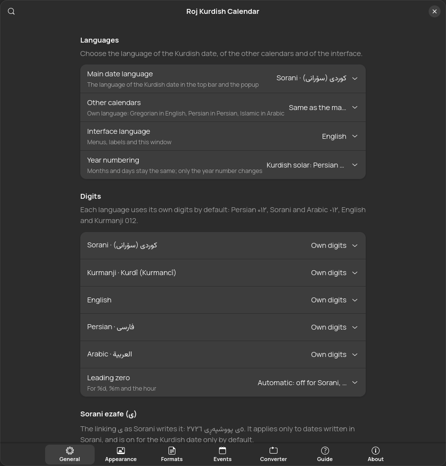
- Languages: main date, other calendars, interface; year numbering.
- Digits: per language, with leading zero control.
- Sorani ezafe: per calendar, after the day and after the month.
- Names: traditional month name variants (Newroz or Xakelêwe, Gulan or Banemêr) and weekday name variants.
- Week: first day and weekend days.
- Islamic calendar: day adjustment.
- Backup and restore: see Backup.
Appearance
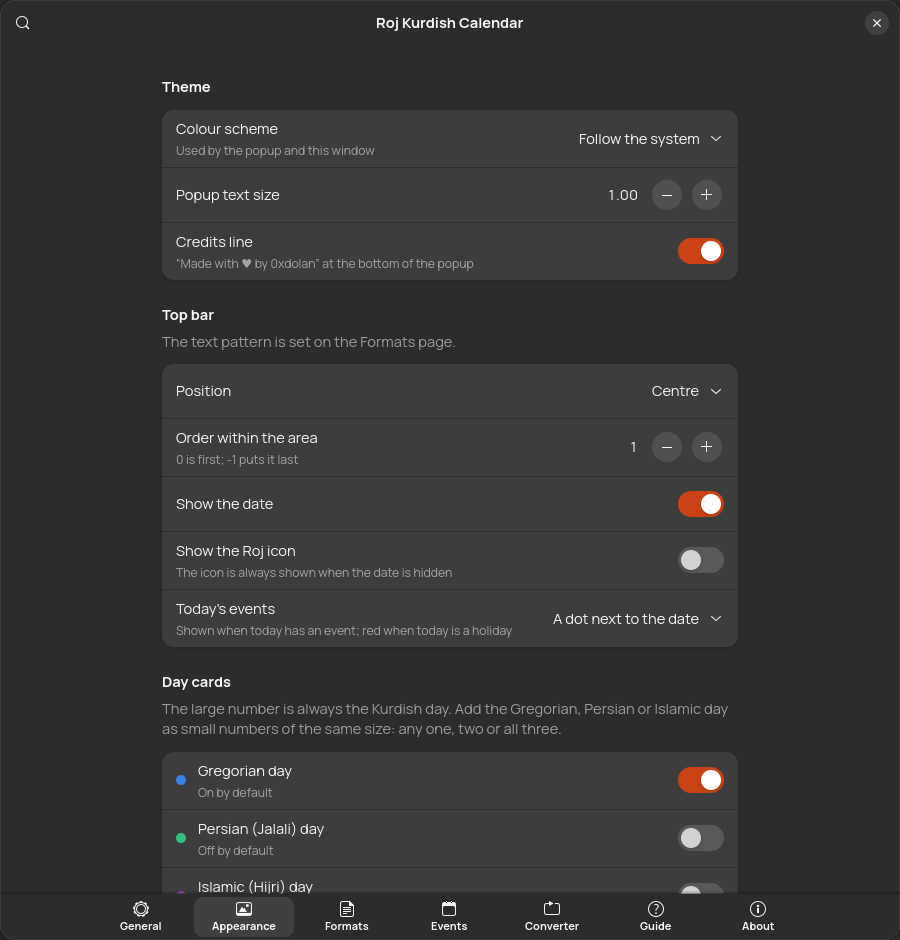
- Theme: follow the system, light or dark; popup text size; credits line.
- Top bar: position and order; show the date and/or the icon; today's events marker.
- Day cards: the small numbers and their placement, with a live preview of this week.
- Popup header: which calendars appear under the Kurdish date.
- Fonts: see Fonts.
Formats
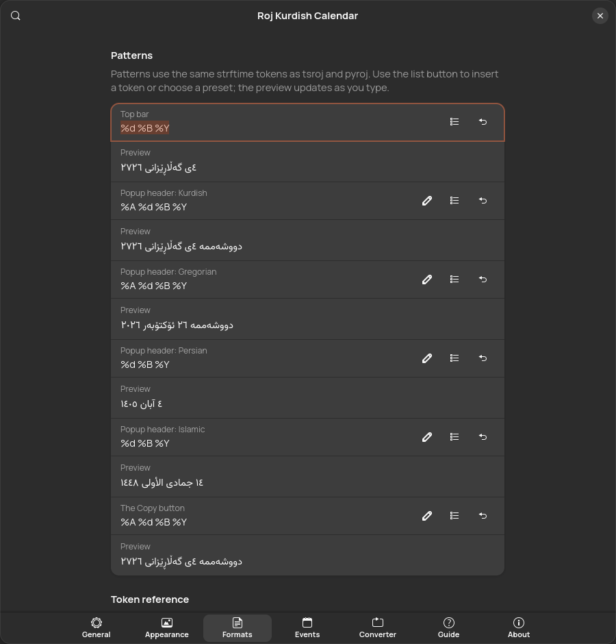
One pattern each for the top bar, the four header lines and the Copy button. Each has a live preview, a list button to insert any token or apply a preset, and a button to restore the default. Below them, every token is shown for today in all four calendars.
Events
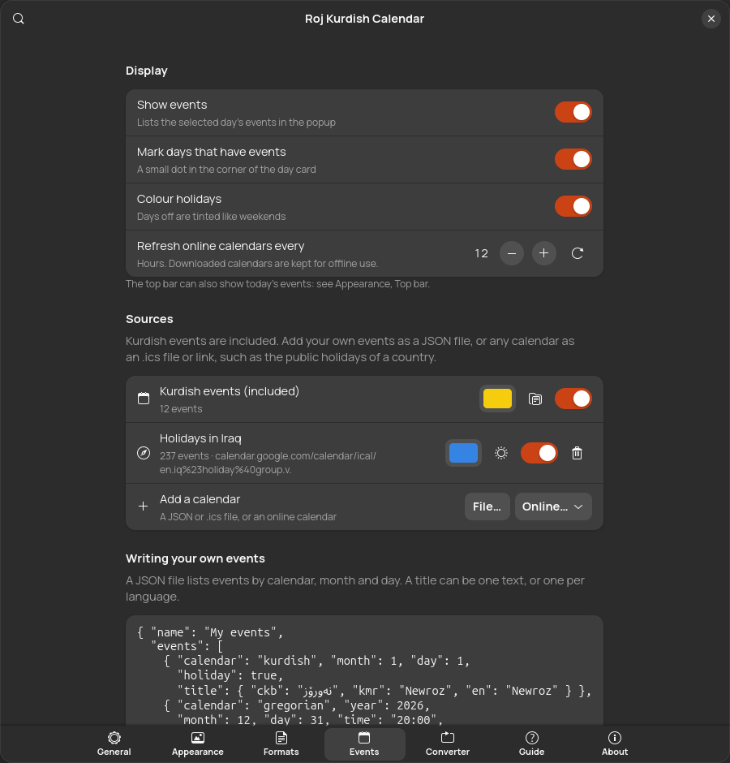
Show or hide events, mark days with dots, colour holidays, and set how often online calendars refresh. Manage the sources: the included Kurdish events, your files and online calendars. Each source has a colour and an on/off switch; files and links can also be treated as holidays. See Events and .ics.
Converter, Guide and About
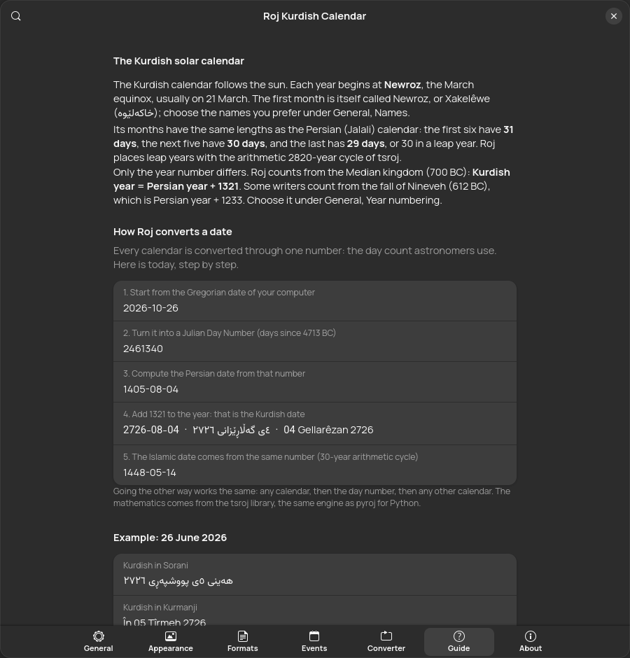
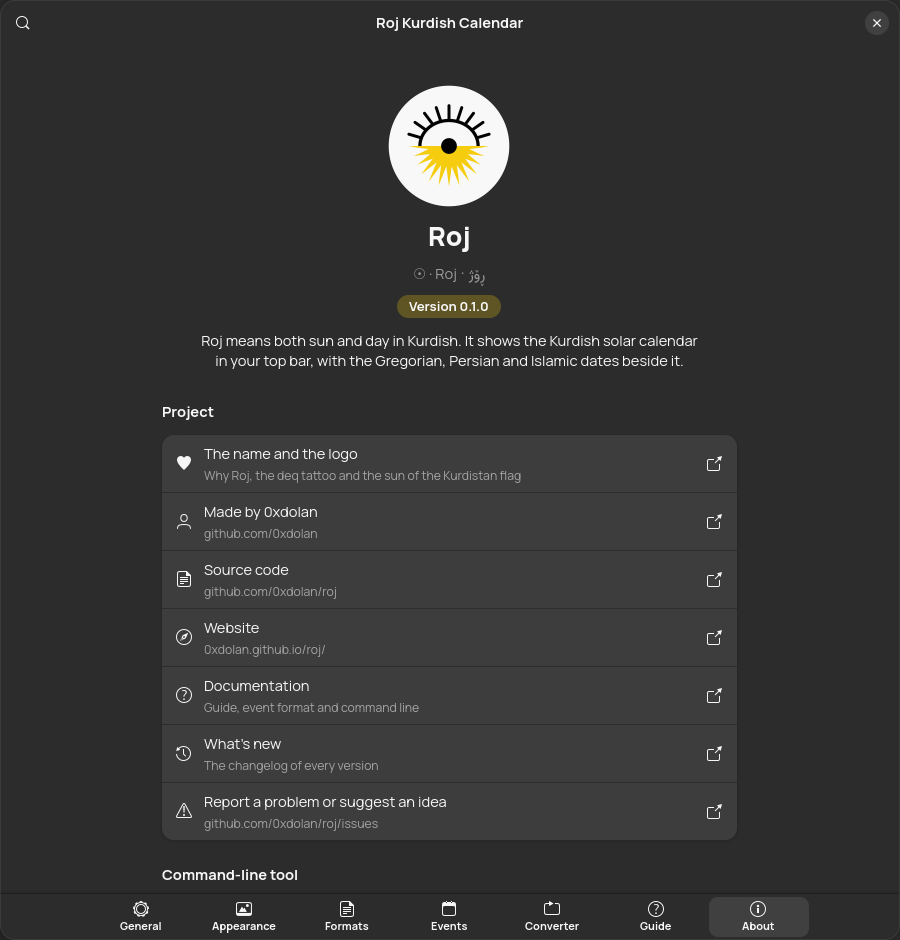
Patterns and tokens
Patterns use the strftime tokens of tsroj and pyroj; everything else is kept as written. Examples for Friday 26 June 2026 at 21:05:
| Pattern | Sorani | Kurmanji |
|---|---|---|
%A %d %B %Y | هەینی ٥ی پووشپەڕی ٢٧٢٦ | În 05 Tîrmeh 2726 |
%d %B %Y | ٥ی پووشپەڕی ٢٧٢٦ | 05 Tîrmeh 2726 |
%d %B | ٥ی پووشپەڕ | 05 Tîrmeh |
%Y/%m/%d | ٢٧٢٦/٤/٥ | 2726/04/05 |
%a %d %b · %I:%M %p | هەینی ٥ی پووش · ٩:٠٥ د.ن | În 05 Tîrm · 09:05 piştî niweroj |
All tokens
| Token | Meaning | Sorani | Kurmanji |
|---|---|---|---|
%Y | Year, four digits | ٢٧٢٦ | 2726 |
%y | Year, last two digits | ٢٦ | 26 |
%B | Month name | پووشپەڕ | Tîrmeh |
%b | Short month name | پووش | Tîrm |
%m | Month number, padding follows the leading zero setting | ٤ | 04 |
%-m | Month number, never padded | ٤ | 4 |
%d | Day of month, padding follows the leading zero setting | ٥ | 05 |
%-d | Day of month, never padded | ٥ | 5 |
%A | Weekday name | هەینی | În |
%a | Short weekday name | هەینی | În |
%E | Minimal weekday name | ه | Î |
%w | Weekday number: Saturday is 1, or Monday is 1 for Gregorian | ٧ | 7 |
%-w | Weekday number from Saturday (1) to Friday (7) | ٧ | 7 |
%H | Hour, 24-hour clock | ٢١ | 21 |
%I | Hour, 12-hour clock | ٩ | 09 |
%M | Minute | ٠٥ | 05 |
%S | Second | ٠٩ | 09 |
%p | AM or PM in the date language | د.ن | piştî niweroj |
%% | A literal % sign | % | % |
- Persian month names always come from the Persian calendar and Islamic month names from the Arabic one, as in tsroj.
- The top bar updates every minute, or every second when its pattern has
%S. - Patterns cannot contain
{or}; the preview tells you when a pattern is invalid.
Fonts
Roj splits text by script. Letters in the Arabic Unicode blocks (U+0600 to U+06FF, U+0750 to U+077F, U+08A0 to U+08FF, U+FB50 to U+FDFF, U+FE70 to U+FEFF), used by Sorani, Persian and Arabic, take the right-to-left font. Everything else, such as Kurmanji and English, takes the left-to-right font.
| Font | Used for | Notes |
|---|---|---|
| Manrope | Left to right (default) | Included |
| Vazirmatn | Right to left (default) | Included |
| Estedad | Right to left | Included |
| Sahel | Right to left | Included |
| Any installed font | Either | The font button next to each choice |
| A .ttf or .otf file | Either | Appearance, Fonts, Load a font file |
The included fonts load straight from the extension without being installed. On systems with Pango older than 1.56 (such as Ubuntu 24.04), the Fonts section offers to copy them to ~/.local/share/fonts/roj instead.
Events and .ics calendars
Roj shows events from three kinds of source, all managed on the Events page:
- Kurdish events, included: Newroz, Kurdish Language Day, Halabja remembrance and more.
- Files: your own JSON events, or any
.icsfile. - Online calendars: any
https://orwebcal://.ics link. Online… offers public holidays for Iraq, Iran, Turkey, Syria and Germany, and Muslim holidays. They are cached in~/.cache/rojand refreshed every 12 hours (you can change it), so they work offline.
JSON event format
{
"name": { "ckb": "بۆنەکانی من", "kmr": "Bûyerên min", "en": "My events" },
"events": [
{ "calendar": "kurdish", "month": 1, "day": 1, "holiday": true,
"title": { "ckb": "نەورۆز", "kmr": "Newroz", "en": "Newroz", "fa": "نوروز", "ar": "نوروز" } },
{ "calendar": "gregorian", "month": 5, "day": 15,
"title": { "ckb": "ڕۆژی زمانی کوردی", "kmr": "Roja Zimanê Kurdî" } },
{ "calendar": "islamic", "month": 10, "day": 1, "holiday": true,
"title": "Eid al-Fitr" },
{ "calendar": "gregorian", "year": 2026, "month": 12, "day": 31,
"time": "20:00", "title": "A one-off event" }
]
}| Field | Required | Meaning |
|---|---|---|
calendar | yes | kurdish, gregorian, persian or islamic: the calendar that month and day are in. |
month, day | yes | 1 to 12, and 1 to 31. |
year | no | Leave it out for an event every year. With a year it happens once. Kurdish years are read in the solar numbering (Persian year + 1321). |
title | yes | One text, or one per language: ckb, kmr, en, fa, ar. Roj shows the one for your date language, then the closest one available. |
holiday | no | true colours the day like a weekend and adds a holiday badge. |
time | no | "HH:MM", shown before the title. |
description | no | Same shapes as title. |
A bare list of events, without name, also works. Events with mistakes are skipped. Save… on the Events page writes a starter file, and roj events --month --file my-events.json checks one in a terminal.
What Roj reads from .ics files
- All-day and timed events:
DTSTART,DTEND,SUMMARY,DESCRIPTION,CATEGORIES. - Events over several days (up to 62) and yearly repeats (
RRULE:FREQ=YEARLY). - Holidays: events with a category containing “holiday”, or the description “Public holiday” (as in Google's national calendars). You can also treat every event of a source as a holiday.
- Cancelled events are skipped; other repeat rules show only the first occurrence.
Converter
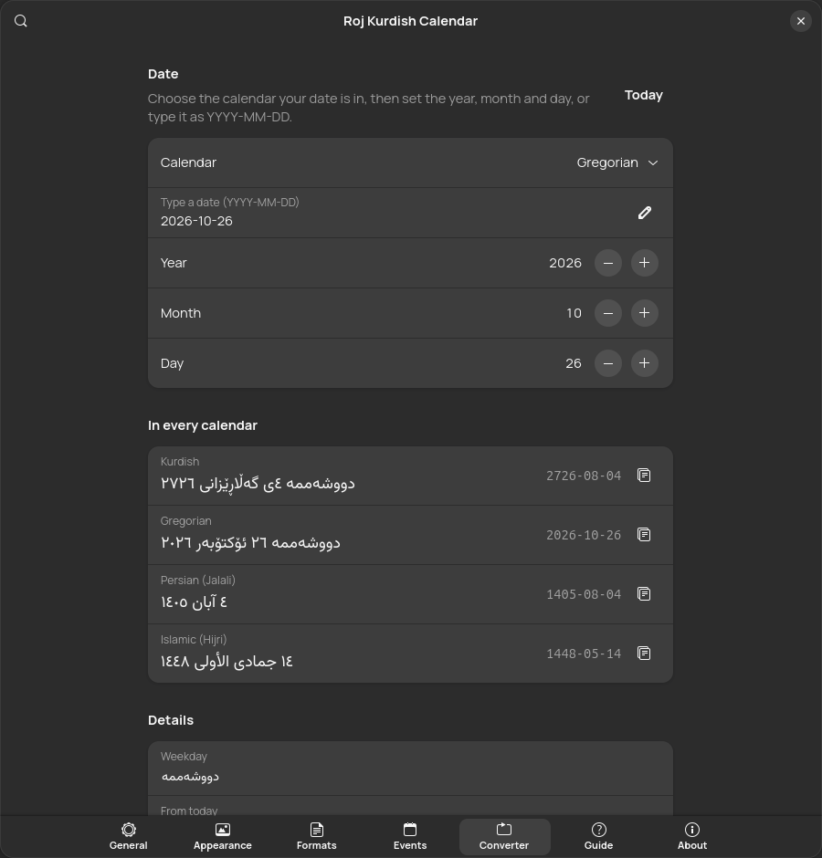
Open it with Convert in the popup.
- Choose the calendar your date is in.
- Set the year, month and day, or type
YYYY-MM-DDand press Enter. The day range follows the month's real length. - Read the date in all four calendars, formatted with your header patterns, each with a copy button.
Details show the weekday, the distance from today, the Kurdish month in both dialects with its length, and the Julian Day Number.
Command line
roj gives the same answers in a terminal with the same engine, and, when run with gjs, your extension settings. make install, the .deb packages, the PPA and the tarball all install it; from the settings window use About, Command-line tool. It also runs with Node.js, so it works without GNOME, for example on Kali with Xfce. man roj has the full reference.
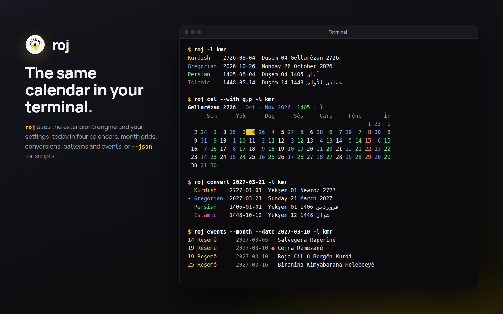
roj # today in all four calendars
roj cal # this Kurdish month
roj cal 2727-01 --with g,p,i # a month, with small numbers
roj convert 2026-06-26 # Gregorian to every calendar
roj convert 2726-01-01 --from kurdish --to gregorian
roj format "%A %d %B %Y" --locale kmr
roj format "%d %B %Y" --date 1448-09-01 --from islamic
roj -l fa --secondary native # Persian, each calendar in its own language
roj events --month # this month's events
roj events 2026-03-21 --file holidays.ics
roj months # the twelve months of this year
roj tokens # every pattern token
roj convert 2026-10-25 --json # machine-readable output| Option | Meaning |
|---|---|
-l, --locale LANG | Date language: ckb, kmr, en, fa or ar |
--secondary same|native | Language of the other calendars |
-f, --from CAL and -t, --to CAL | Input and output calendar: kurdish, gregorian, persian, islamic |
-d, --date DATE | The date for format and events |
--with g,p,i | Small numbers in cal |
--file PATH | Extra JSON or .ics events (repeatable) |
--digits SET | native, latin, arabic or persian |
--era, --leading-zero, --no-ezafe, --month-variant, --weekday-variant, --islamic-offset | Override the matching settings |
--json, --color, --no-color, --no-config | Output control; --no-config ignores your extension settings |
Exit status: 0 on success, 1 for an error such as an invalid date, 2 for a usage error.
Backup and restore
General, Backup and restore, Export… saves every setting (languages, patterns, fonts, event sources and the rest) to a roj-settings-DATE.json file. On a new computer or a fresh install, Import… that file. Settings that do not apply, for example from a newer version, are skipped and counted. Reset… returns everything to the defaults.
Font files and event files are saved by path. Copy them to the same place on the new computer, or load them again.
Troubleshooting
I installed Roj but nothing appears
On Wayland, GNOME Shell loads new extensions only after you log out and back in. Then switch Roj on in the Extensions app, or run gnome-extensions enable roj@0xdolan.github.io. Roj needs GNOME Shell 45 or newer (gnome-shell --version).
The roj command is not found
make install puts it in ~/.local/bin. If that folder is not on your PATH, open a new terminal, or add export PATH="$HOME/.local/bin:$PATH" to your shell's startup file.
The text is not in Vazirmatn or Manrope
On Pango older than 1.56, use Appearance, Fonts, Install the included fonts, then log out and back in.
The Islamic date is a day off
Set General, Islamic calendar, Day adjustment to match the moon sighting where you live.
An online calendar shows an error
Roj keeps the last good copy and tries again at the next refresh. Use the refresh button on the Events page to retry now, and check that the link opens in a browser.
Report a problem
Open an issue on GitHub with your GNOME Shell version and, if it helps, a settings export.